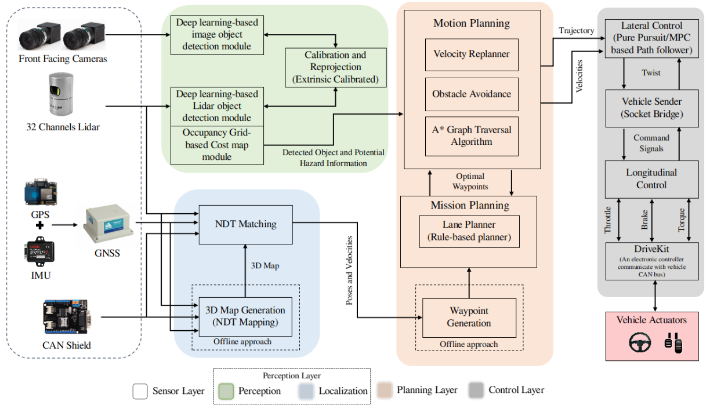
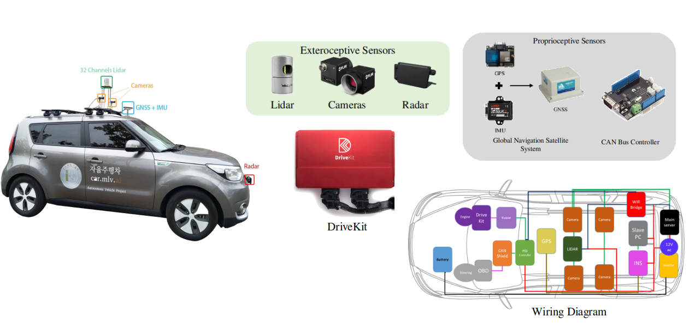
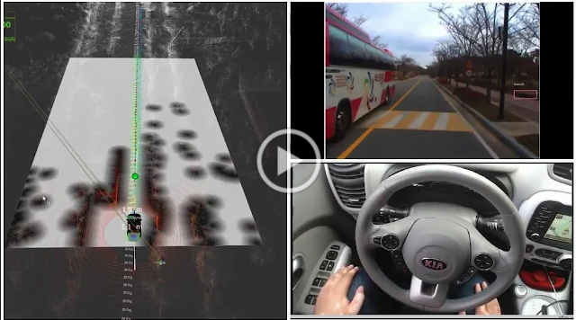
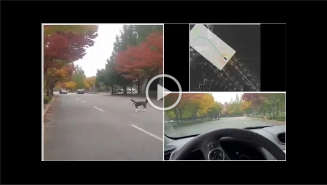
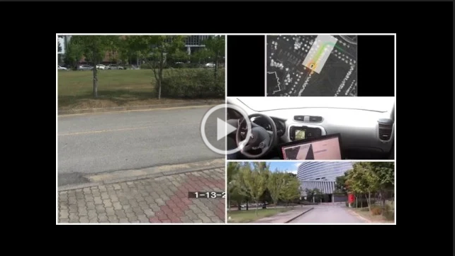
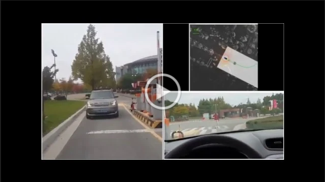
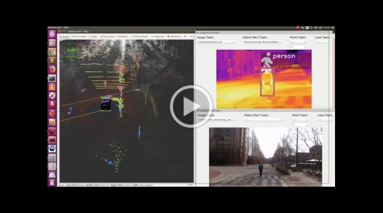
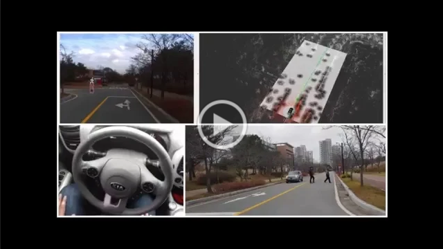

I am a PostDoctorate Reseacher at MLV,EECS,GIST where I work on the autonomous vehicle focus of how to make it socially acceptable and operate it with minimal sensor suite. I have work on an end-to-end complete suite of autonomous vehicle from mapping, localization, perception, planning and control. My research interest include sensorimotor learning, representation learning. I finished my PhD at Machine Learning and Vision Lab at Gwangju Institute of Science and Technology, where I worked under the supervision Prof.Moongu Jeon. My PhD Thesis was titled “Deep Neural Networks for Understanding Autonomous Vehicle Behavior and Control”.
LDNet: End-to-End Lane Marking Detection Approach using a Dynamic Vision Sensor
Farzeen Munir, Shoaib Azam, Moongu Jeon, Byung-Geun Lee and Witold Pedrycz
IEEE Transactions on Intelligent Transportation Systems. T-ITS 2021 (Accepted).
Key Points Estimation and Point Instance Segmentation Approach for Lane Detection
Yeongmin Ko, Younkwan Lee, Shoaib Azam, Farzeen Munir, Moongu Jeon and Witold Pedrycz
IEEE Transactions on Intelligent Transportation Systems. T-ITS 2021.
[PDF] [Code]
N2C: Neural Network Controller Design Using Behavioral Cloning
Shoaib Azam, Farzeen Munir, M Aasim Rafique, A.M Sheri, M.I Hussain and Moongu Jeon
IEEE Transactions on Intelligent Transportation Systems. T-ITS 2021.
[PDF]
System, Design and Experimental Validation of Autonomous Vehicle in an Unconstrained Environment
Shoaib Azam, Farzeen Munir, A.M Sheri, J.Kim and Moongu Jeon
Sensors. Sensors 2020.
[PDF]
Transfer Learning for Vehicle Detection Using Two Cameras with Different Focal Lengths
Vinh Quang Dinh, Farzeen Munir, Shoaib Azam, Kin-Choong Yow and Moongu Jeon
Information Sciences. Inf.Sci 2020.
[PDF]
Saliency Based Object Detection and Enhancements Using Spectral Residual Approach in Static Images and Videos
Shoaib Azam, Syed Omer Gilani, Mohsin Jamil, Yasar Ayaz, Muhammad Naveed, and Muhammad Nasir Khan
Advanced Science Letters. Adv.Sci.Lett 2015.
SSTN: Self-Supervised Domain Adaptation Thermal Object Detection for Autonomous Driving
Farzeen Munir, Shoaib Azam and Moongu Jeon
IEEE/RSJ International Conference on Intelligent Robots and Systems. IROS 2021.
[PDF]
Channel Boosting Feature Ensemble for Radar-based Object Detection
Shoaib Azam, Farzeen Munir, and Moongu Jeon
IEEE Intelligent Vehicles Symposium. IV 2021.
[PDF]
Visuomotor Steering angle Prediction in Dynamic Perception Environment for Autonomous Vehicle
Farzeen Munir, Shoaib Azam and Moongu Jeon
IEEE International Conference On Consumer Electronics. ICCE-Asia 2020.
[PDF]
Multiple Objects Tracking using Radar for Autonomous Driving
Muhamamd Ishfaq Hussain, Shoaib Azam, Farzeen Munir, Zafran Khan, and Moongu Jeon
IEEE International IOT, Electronics and Mechatronics Conference. IEMTRONICS 2020.
[PDF]
Dynamic Control System Design for Autonomous Car
Shoaib Azam, Farzeen Munir, and Moongu Jeon
International Conference on Vehicle Technology and Intelligent Transportation Systems. VEHITS 2020.
[PDF]
Automated Taxi Booking Operations for Autonomous Vehicles
Linh Van Ma, Shoaib Azam, Farzeen Munir, Jinho Choi and, Moongu Jeon
IEEE International Conference on Signal Processing and Communication Systems. ICSPCS 2019.
[PDF]
Data fusion of Lidar and Thermal Camera for Autonomous driving
Shoaib Azam, Farzeen Munir, Ahmad Muqeem Sheri, Ishfaq Hussain, YeongMin Ko and Moongu Jeon
Applied Industrial Optics Meeting. AIO 2019.
[PDF]
Where Am I: Localization and 3D Maps for Autonomous Vehicles
Farzeen Munir, Shoaib Azam, Ahmad Muqeem Sheri, YeongMin Ko and Moongu Jeon
International Conference on Vehicle Technology and Intelligent Transportation Systems. VEHITS 2019.
[PDF]
Autonomous Vehicle: The Architectural Aspect of Self Driving Car
Farzeen Munir, Shoaib Azam, Ishfaq Hussain, Ahmad Muqeem Sheri, and Moongu Jeon
Sensors, Signal and Image Processing. SSIP 2018.
[PDF]
Object Modeling from 3D Point Cloud Data for Self-Driving Vehicles
Shoaib Azam, Farzeen Munir, Aasim Rafique, YeongMin Ko, Ahmad Muqeem Sheri and Moongu Jeon
IEEE Intelligent Vehicles Symposium. IV 2018.
[PDF]
Vehicle Pose Detection Using Region Based Convolutional Neural Network
Shoaib Azam, Aasim Rafique, Moongu Jeon
The International Conference on Control Automation & Information Science. ICCAIS 2016.
[PDF]
A Benchmark of Computational Models of Saliency to Predict Human Fixations in Videos
Shoaib Azam, Syed Omer Gilani, Moongu Jeon, Rehan Yousaf, and Jeong-Bae Kim
International Joint Conference on Computer Vision, Imaging and Computer Graphics Theory and Applications. VISGRAPP 2016.
[PDF]
Face-deidentification in images using restricted boltzmann machines
Rafique, M. Aasim, Shoaib Azam, Moongu Jeon, and Sangwook Lee
International Conference for Internet Technology and Secured Transactions. ICITST 2016.
[PDF]
Face-deidentification in images using restricted boltzmann machines
Rafique, M. Aasim, Shoaib Azam, Moongu Jeon, and Sangwook Lee
International Conference for Internet Technology and Secured Transactions. ICITST 2016.
[PDF]
Single object tracking system using fast compressive tracking
Tahir, Abdullah, Shoaib Azam, Sujani Sagabala, Moongu Jeon, and Ryu Jeha
IEEE International Conference on Consumer Electronics. ICCE-Asia 2016.
[PDF]








Powered by Jekyll and Minimal Light theme.